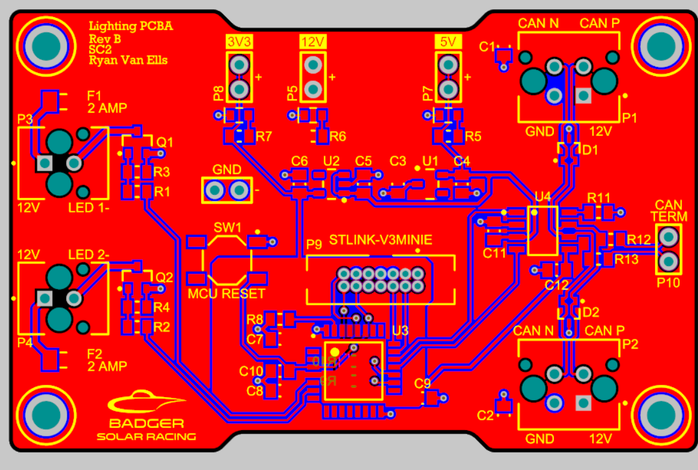
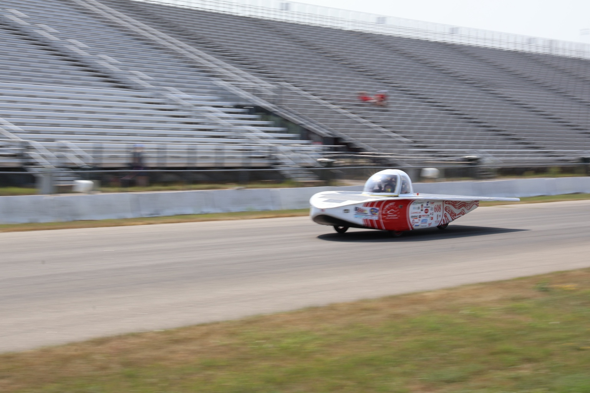

Seven boards, one inherited design, multiple possible failure domains.
The lighting system used multiple identical control boards distributed around the vehicle. I did not design this board — my work was testing, debugging, repairing, and validating it. A failed unit could present as a power issue, MCU problem, CAN communication failure, output-stage fault, or connector/harness problem, so I used systematic testing and fault-tree reasoning to narrow the failure domain before touching a soldering iron.
- Tested and debugged seven lighting boards using fault-tree analysis
- Checked boards for shorts and measured power rails
- Reflowed MCU solder joints, replaced failed MCUs
- Replaced failed LDO regulators and CAN transceivers
- Replaced a failed CAN transceiver on the PDC during broader LV troubleshooting
- Replaced failed harness and enclosure connectors
- Revalidated repaired boards on the bench and in the vehicle
- Lighting board schematic and PCB layout
- MCU firmware and CAN protocol definitions
- Enclosure and harness design
What's on the board.
Each unit combines an MCU, a CAN transceiver for network communication, an LDO regulator for local power, and driver outputs for the lighting elements — all inherited from the existing design. Identifying which of these had failed, per board, was most of the work.

From symptom to fault domain to component.
Observe symptoms
Recorded how each board actually failed — no output, no CAN response, intermittent behavior — before touching anything.
Divide fault domains
Narrowed to power, MCU, CAN, output stage, or connector/harness before further testing.
Test & isolate
Used continuity, resistance, and rail checks to find shorts and isolate the failing component within its domain.
Repair & revalidate
Reflowed, replaced, or rewired as needed, then rechecked the board on the bench and in the vehicle.
Different failures, different fixes.
Reflow & replacement
Reflowed suspect MCU joints and replaced failed microcontrollers where the fault was isolated to the controller.
LDO replacement
Replaced failed low-dropout regulators when rail behavior indicated a local power-conversion failure.
Transceiver replacement
Replaced failed CAN transceivers on lighting boards, and separately repaired a failed CAN transceiver on the PDC.
Connector repair
Replaced failed connectors on the wiring harness and board enclosure when the issue was outside the PCB itself.
Debugging a system, not just a schematic.
A board-level symptom doesn't always originate on the board. By checking rails, logic, communication, and interconnects in a consistent order, I could separate component failures from harness or enclosure faults and avoid unnecessary rework.
This complemented my PDC Rev B work: one project was circuit redesign and bring-up, the other was systematic diagnosis and repair of existing hardware.

Checked in the system it actually runs in.
Repairs were verified progressively before final vehicle use, so a board that worked on the bench also had to communicate and behave correctly once connected to the rest of the low-voltage architecture — and hold up through competition running.
